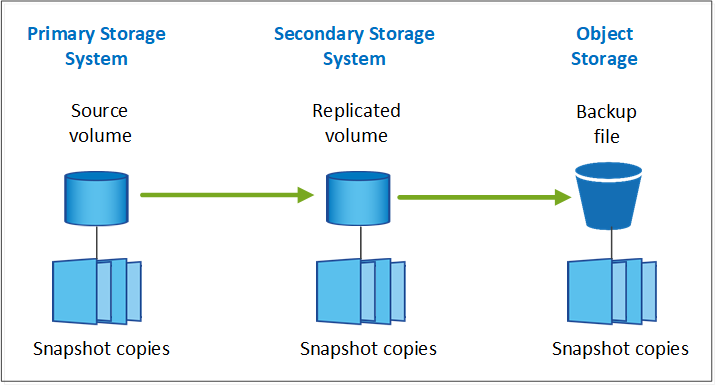

Notes de mise à jour
Notes de mise à jour
Planifiez votre parcours en matière de protection
 Suggérer des modifications
Suggérer des modifications
Le service de sauvegarde et de restauration BlueXP vous permet de créer jusqu'à trois copies de vos volumes source pour protéger vos données. Lorsque vous activez ce service sur vos volumes, vous pouvez sélectionner de nombreuses options. Vous devez donc revoir vos choix pour être prêt.
Nous allons passer en revue les options suivantes :
-
Quelles fonctionnalités de protection utiliserez-vous : copies Snapshot, volumes répliqués et/ou sauvegarde dans le cloud
-
Quelle architecture de sauvegarde utiliserez-vous : une sauvegarde en cascade ou « Fan-Out » de vos volumes
-
Utiliserez-vous les règles de sauvegarde par défaut ou devez-vous créer des règles personnalisées
-
Souhaitez-vous que le service crée des compartiments cloud pour vous ou créez-vous des conteneurs de stockage objet avant de commencer
-
Quel mode de déploiement BlueXP Connector utilisez-vous (mode standard, restreint ou privé) ?
Quelles fonctions de protection utiliserez-vous
Avant de sélectionner les fonctions que vous utiliserez, voici une brève explication de ce que chaque fonction fait et du type de protection qu'elle fournit.
| Type de sauvegarde | Description |
|---|---|
Snapshot |
Crée une image en lecture seule et instantanée d'un volume au sein du volume source en tant que copie Snapshot. Vous pouvez utiliser la copie Snapshot pour restaurer des fichiers individuels ou pour restaurer l'intégralité du contenu d'un volume. |
La réplication |
Crée une copie secondaire des données sur un autre système de stockage ONTAP et met continuellement à jour les données secondaires. Vous disposez de données actualisées et accessibles dès que vous en avez besoin. |
La sauvegarde dans le cloud |
Crée des sauvegardes de vos données dans le cloud à des fins de protection et d'archivage à long terme. Si nécessaire, vous pouvez restaurer un volume, un dossier ou des fichiers individuels de la sauvegarde vers un environnement de travail identique ou différent. |
Les snapshots constituent la base de toutes les méthodes de sauvegarde et ils sont tenus d'utiliser le service de sauvegarde et de restauration. Une copie Snapshot est une image instantanée d'un volume en lecture seule. L'image consomme un espace de stockage minimal et entraîne une surcharge minime des performances, car elle enregistre uniquement les modifications apportées aux fichiers depuis la dernière copie Snapshot. La copie Snapshot créée sur votre volume permet de maintenir la synchronisation entre le volume répliqué et le fichier de sauvegarde et les modifications apportées au volume source, comme illustré dans la figure.

Vous pouvez choisir de créer à la fois des volumes répliqués sur un autre système de stockage ONTAP et des fichiers de sauvegarde dans le cloud. Ou vous pouvez simplement créer des volumes répliqués ou des fichiers de sauvegarde. C'est votre choix.
En résumé, il s'agit des flux de protection valides que vous pouvez créer pour les volumes de votre environnement de travail ONTAP :
-
Volume source → copie Snapshot → volume répliqué → fichier de sauvegarde
-
Volume source → copie Snapshot → fichier de sauvegarde
-
Volume source → copie Snapshot → volume répliqué

|
La création initiale d'un volume répliqué ou d'un fichier de sauvegarde inclut une copie complète des données sources — il s'agit d'un transfert de base. Les transferts suivants contiennent uniquement des copies différentielles des données source (l'instantané). |
Comparaison des différentes méthodes de sauvegarde
Le tableau suivant présente une comparaison généralisée des trois méthodes de sauvegarde. Si l'espace de stockage objet est généralement moins cher que votre stockage sur disque sur site, si vous pensez pouvoir restaurer fréquemment des données à partir du cloud, les frais de sortie des fournisseurs cloud peuvent réduire certaines de vos économies. Vous devez identifier la fréquence à laquelle vous devez restaurer les données à partir des fichiers de sauvegarde dans le cloud.
En plus de ces critères, le stockage cloud offre des options de sécurité supplémentaires si vous utilisez la fonction DataLock et de protection contre les ransomware, et des économies supplémentaires en sélectionnant des classes de stockage d'archivage pour les fichiers de sauvegarde plus anciens. "En savoir plus sur le verrouillage des données et la protection contre les attaques par ransomware" et "paramètres de stockage d'archives".
| Type de sauvegarde | Vitesse des sauvegardes | Coût de sauvegarde | Vitesse de restauration | Coût de restauration |
|---|---|---|---|---|
Instantané |
Élevée |
Faible (espace disque) |
Élevée |
Faible |
Réplication |
Moyen |
Moyen (espace disque) |
Moyen |
Moyen (réseau) |
Sauvegarde cloud |
Faible |
Faible (espace objet) |
Faible |
Élevé (frais de fournisseur) |
Quelle architecture de sauvegarde utiliserez-vous
Lors de la création de volumes répliqués et de fichiers de sauvegarde, vous pouvez choisir une architecture « fan-out » ou « cascade » pour sauvegarder vos volumes.
Une architecture Fan-Out transfère la copie Snapshot de manière indépendante vers le système de stockage de destination et l'objet de sauvegarde dans le cloud.

Une architecture cascade transfère d'abord la copie Snapshot vers le système de stockage de destination, puis ce système transfère la copie vers l'objet de sauvegarde dans le cloud.

Comparaison des différentes architectures possibles
Ce tableau fournit une comparaison des architectures « Fan-Out » et « Cascade ».
| « Fan-Out » | Cascade |
|---|---|
Faible impact sur les performances du système source, car il envoie des copies Snapshot à 2 systèmes distincts |
Moins d'impact sur les performances du système de stockage source car la copie Snapshot n'est envoyée qu'une seule fois |
Plus facile à configurer car toutes les règles, la mise en réseau et les configurations ONTAP sont effectuées sur le système source |
Une partie de la mise en réseau et de la configuration ONTAP doit également être effectuée à partir du système secondaire. |
Utiliserez-vous les règles de sauvegarde par défaut pour les copies Snapshot, les réplications et les sauvegardes
Vous pouvez utiliser les règles par défaut fournies par NetApp pour créer vos sauvegardes ou créer des règles personnalisées. Lorsque vous activez le service de sauvegarde et de restauration de vos volumes à l'aide de l'assistant d'activation, vous pouvez sélectionner parmi les règles par défaut et toutes les autres règles qui existent déjà dans l'environnement de travail (Cloud Volumes ONTAP ou système ONTAP sur site). Si vous souhaitez utiliser une stratégie différente de celles existantes, vous pouvez créer la stratégie avant de démarrer ou pendant l'utilisation de l'assistant d'activation.
-
La règle Snapshot par défaut crée des copies Snapshot toutes les heures, tous les jours et toutes les semaines, en conservant 6 copies Snapshot toutes les heures, 2 copies quotidiennes et 2 copies Snapshot hebdomadaires.
-
La règle de réplication par défaut réplique les copies Snapshot quotidiennes et hebdomadaires, en conservant 7 copies Snapshot quotidiennes et 52 copies Snapshot hebdomadaires.
-
La règle de sauvegarde par défaut réplique les copies Snapshot quotidiennes et hebdomadaires, en conservant 7 copies Snapshot quotidiennes et 52 copies Snapshot hebdomadaires.
Si vous créez des règles personnalisées pour la réplication ou la sauvegarde, les étiquettes de règles (par exemple, « quotidien » ou « hebdomadaire ») doivent correspondre aux étiquettes figurant dans vos règles Snapshot ou les volumes répliqués et les fichiers de sauvegarde ne seront pas créés.
Vous pouvez créer des règles personnalisées à l'aide de BlueXP Backup Recovery, de System Manager ou de l'interface de ligne de commande ONTAP.
"Créez une règle Snapshot à l'aide de System Manager"
"Créez une règle Snapshot à l'aide de l'interface de ligne de commandes de ONTAP"
"Créez une règle de réplication à l'aide de System Manager"
"Créez une règle de réplication à l'aide de l'interface de ligne de commandes de ONTAP"
"Créez une règle de sauvegarde à l'aide de System Manager"
"Créez une règle de sauvegarde à l'aide de l'interface de ligne de commandes de ONTAP"
Remarque : lorsque vous utilisez System Manager, sélectionnez Asynchronous comme type de stratégie pour les stratégies de réplication, puis sélectionnez Asynchronous et Sauvegarder dans le cloud pour la sauvegarde vers les stratégies d'objet.
Vous pouvez créer des règles de stockage Snapshot, de réplication et de sauvegarde vers un stockage objet dans l'interface de sauvegarde et de restauration BlueXP. Voir la section pour "ajout d'une nouvelle politique de sauvegarde" pour plus d'informations.
Voici quelques exemples de commandes de l'interface de ligne de commande de ONTAP qui peuvent vous être utiles si vous créez des règles personnalisées. Notez que vous devez utiliser le admin vserver (machine virtuelle de stockage) en tant que <vserver_name> dans ces commandes.
| Description de la politique | Commande |
|---|---|
Règles Snapshot simples |
|
Sauvegarde simple dans le cloud |
|
Sauvegardez vos données dans le cloud avec DataLock et la protection contre les ransomware |
|
Sauvegarde dans le cloud avec une classe de stockage d'archivage |
|
Réplication simple vers un autre système de stockage |
|
|
|
Seules les règles de copie peuvent être utilisées pour la sauvegarde vers les relations cloud. |
Où résident mes règles ?
Les règles de sauvegarde résident à différents emplacements selon l'architecture de sauvegarde que vous prévoyez d'utiliser : Fan-Out ou Cascading. Les règles de réplication et les règles de sauvegarde ne sont pas conçues de la même manière, car les réplications associent deux systèmes de stockage ONTAP et la sauvegarde sur objet utilise un fournisseur de stockage comme destination.
Les règles Snapshot résident toujours sur le système de stockage principal.
Les règles de réplication résident toujours sur le système de stockage secondaire.
Les règles de sauvegarde sur objet sont créées sur le système où réside le volume source. Il s'agit du cluster principal pour les configurations « Fan-Out » et du cluster secondaire pour les configurations en cascade.
Ces différences sont indiquées dans le tableau.
| Architecture | Règle Snapshot | Règle de réplication | Politique de sauvegarde |
|---|---|---|---|
Fan-Out |
Primaire |
Secondaire |
Primaire |
Cascade |
Primaire |
Secondaire |
Secondaire |
Ainsi, si vous prévoyez de créer des règles personnalisées lors de l'utilisation de l'architecture en cascade, vous devrez créer les règles de réplication et de sauvegarde sur objet sur le système secondaire où les volumes répliqués seront créés. Si vous prévoyez de créer des règles personnalisées lors de l'utilisation de l'architecture « Fan-Out », vous devrez créer les règles de réplication sur le système secondaire où les volumes répliqués seront créés et sauvegarder les règles d'objet sur le système principal.
Si vous utilisez les stratégies par défaut qui existent sur tous les systèmes ONTAP, vous êtes tous définis.
Voulez-vous créer votre propre conteneur de stockage objet
Lorsque vous créez des fichiers de sauvegarde dans un stockage objet pour un environnement de travail, par défaut, le service de sauvegarde et de restauration crée le conteneur (compartiment ou compte de stockage) pour les fichiers de sauvegarde dans le compte de stockage objet que vous avez configuré. Par défaut, le compartiment AWS ou GCP est nommé « netapp-Backup-<uuid> ». Le compte de stockage Azure Blob est nommé « <uuid> ».
Vous pouvez créer le conteneur vous-même dans le compte du fournisseur d'objets si vous souhaitez utiliser un préfixe spécifique ou attribuer des propriétés spéciales. Si vous souhaitez créer votre propre conteneur, vous devez le créer avant de lancer l'assistant d'activation. Le conteneur doit être utilisé exclusivement pour stocker les fichiers de sauvegarde de volume ONTAP - il ne peut pas être utilisé à d'autres fins. L'assistant d'activation de la sauvegarde détecte automatiquement vos conteneurs provisionnés pour le compte et les informations d'identification sélectionnés afin que vous puissiez sélectionner celui que vous souhaitez utiliser.
Vous pouvez créer le compartiment à partir de BlueXP ou de votre fournisseur cloud.
Remarque : pour le moment, vous ne pouvez pas utiliser vos propres compartiments S3 lors de la création de sauvegardes dans des systèmes StorageGRID ou dans ONTAP S3.
Si vous prévoyez d'utiliser un préfixe de compartiment différent de « netapp-backup-xxxxxx », vous devez modifier les autorisations S3 pour le rôle IAM du connecteur. Pour plus d'informations, consultez les rubriques relatives à la création de sauvegardes dans AWS S3.
Réglages avancés du godet
Si vous prévoyez de transférer d'anciens fichiers de sauvegarde vers le stockage d'archivage, ou si vous prévoyez d'activer DataLock et la protection contre les ransomware pour verrouiller vos fichiers de sauvegarde et les scanner à la recherche d'un éventuel ransomware, vous devrez créer le conteneur avec certains paramètres de configuration :
-
À l'heure actuelle, le stockage d'archives par compartiments est pris en charge dans le stockage AWS S3 avec ONTAP 9.10.1 ou une version ultérieure sur vos clusters. Par défaut, les sauvegardes démarrent dans la classe de stockage S3 Standard. Veillez à créer le compartiment avec les règles de cycle de vie appropriées :
-
Déplacez les objets dans l'ensemble du périmètre du compartiment vers S3 Standard-IA après 30 jours.
-
Déplacez les objets avec la balise « smc_push_to_archive: True » vers Glacier flexible Retrieval (anciennement S3 Glacier)
-
-
Data Lock et la protection contre les ransomware sont pris en charge dans le stockage AWS lorsque vous utilisez le logiciel ONTAP 9.11.1 ou une version ultérieure sur vos clusters, et le stockage Azure lorsque vous utilisez ONTAP 9.12.1 ou une version ultérieure du logiciel.
-
Pour AWS, vous devez activer le verrouillage objet sur le compartiment selon une période de conservation de 30 jours.
-
Pour Azure, vous devez créer une classe de stockage avec une prise en charge des immuabilité au niveau de la version.
-
Quel mode de déploiement BlueXP Connector utilisez-vous
Si vous utilisez déjà BlueXP pour gérer votre stockage, un connecteur BlueXP a déjà été installé. Si vous prévoyez d'utiliser le même connecteur avec la sauvegarde et la restauration BlueXP, alors vous êtes paré. Si vous devez utiliser un connecteur différent, vous devez l'installer avant de commencer votre implémentation de sauvegarde et de restauration.
BlueXP propose plusieurs modes de déploiement qui vous permettent d'utiliser BlueXP en fonction de vos exigences métier et de sécurité. Standard mode exploite la couche SaaS de BlueXP pour fournir des fonctionnalités complètes, tandis que restricted mode et private mode sont disponibles pour les entreprises ayant des restrictions de connectivité.
"En savoir plus sur les modes de déploiement BlueXP".
"Regardez cette vidéo sur les modes de déploiement BlueXP".
Prise en charge des sites avec une connectivité Internet complète
Lorsque la sauvegarde et la restauration BlueXP sont utilisées dans un site doté d'une connectivité Internet complète (également appelé « mode standard » ou « mode SaaS »), vous pouvez créer des volumes répliqués sur tous les systèmes ONTAP ou Cloud Volumes ONTAP sur site gérés par BlueXP, en outre, vous pouvez créer des fichiers de sauvegarde sur un stockage objet dans n'importe quel fournisseur cloud pris en charge. "Consultez la liste complète des destinations de sauvegarde prises en charge".
Pour obtenir la liste des emplacements de connecteur valides, reportez-vous à la rubrique de sauvegarde du fournisseur cloud dans lequel vous prévoyez de créer des fichiers de sauvegarde. Il existe certaines restrictions dans lesquelles le connecteur doit être installé manuellement sur une machine Linux ou déployé dans un fournisseur de cloud spécifique.
Prise en charge des sites avec une connectivité Internet limitée
La sauvegarde et la restauration BlueXP peuvent être utilisées dans un site doté d'une connectivité Internet limitée (également appelé « mode restreint ») pour sauvegarder des données de volume. Dans ce cas, vous devez déployer le connecteur BlueXP dans la région réservée.
-
Vous pouvez sauvegarder les données à partir de systèmes Cloud Volumes ONTAP installés dans les régions commerciales Azure vers Azure Blob. Découvrez comment "Sauvegarde des données Cloud Volumes ONTAP dans Azure Blob".
Assistance pour les sites sans connexion Internet
Les fonctionnalités de sauvegarde et de restauration BlueXP peuvent être utilisées dans un site sans connexion Internet (également appelé « mode privé » ou « sites invisibles ») pour sauvegarder des données de volume. Dans ce cas, vous devrez déployer le connecteur BlueXP sur un hôte Linux du même site.
-
Vous pouvez sauvegarder les données à partir de systèmes ONTAP locaux sur site vers des systèmes NetApp StorageGRID locaux. Découvrez comment "Sauvegarde des données ONTAP sur site dans StorageGRID" pour plus d'informations.
-
Vous pouvez sauvegarder les données à partir de systèmes ONTAP locaux sur site vers des systèmes ONTAP locaux ou des systèmes Cloud Volumes ONTAP configurés pour le stockage objet S3. Découvrez comment "Sauvegardez les données ONTAP sur site dans ONTAP S3" pour plus d'informations.